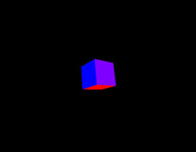
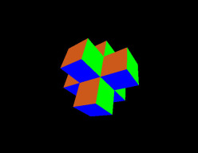
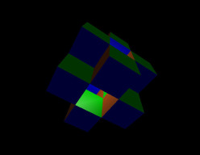
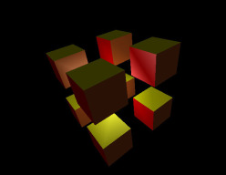

Write a program that draws the Menger cube and similar fractals.
Here are a few things you’ll get out of this project:
struct to create our own types. Perhaps review Charles Li’s notes on structures if needed.deque), lecture 4 on dynamic memory and linked lists could be useful.As always,
The essential idea of the construction is that of a Cantor set. In one dimension, the Cantor set is constructed by removing the middle third of an interval, and then applying the same transformation recursively to each subinterval.1 Taking Cartesian products of these sets, we would (after two iterations) actually wind up with something like this:
However, by leveraging the extra flexibility we have in three dimensions, we can draw other cool shapes by taking different (symmetric) subsets at each step. For example, by keeping all sub-cubes with center a distance square root of 2 from the center of the original (assuming unit side length), we get this thing:
In this project, you’ll write something that draws just about all “sensible” modulations of this theme (in particular, those which will still have all symmetries of the original cube). If you are panicking right now because this looks too complicated, fear not:
The main thing I want you to do is to produce a data structure containing the geometry of these objects. The skeleton code takes care of most of the subtleties of actually drawing that geometry (while rotating the scene, applying lighting, etc.). Note that implicit in this task is figuring out a nice way to write something that “modulates” the shape you get (including all the examples shown in the figures). I’ll elaborate on these modulations in the next section.
You are given a deque called M which initially contains a single cube. Your only job is to apply the specified transformation, repeatedly replacing each cube in M with the specified subset of sub-cubes. The skeleton will do the work of drawing those cubes. I’ll leave the organization up to you. More details follow.
First note that everything is made of subdividing cubes into smaller cubes. So each of our pictures will be composed of…cubes. Next, note that all the cubes are “aligned”, in the sense that each one has a face parallel to a face of each other cube. So, rather than giving coordinates for all the corners, we can instead fix some axes to which all cubes are aligned, and specify only coordinates for the center and a scalar for the radius (by this, we mean half the width of a face, by analogy to a circle or sphere). That is, each tuple (x, y, z, r) specifies a cube that we might be interested in. In C++, we can use a struct like the following to store such values:
Now let’s imagine how the transformation goes: we begin with a single cube, divide it into 27 sub-cubes, and then choose some subset of these to keep for the next generation. Now we do the same to every sub-cube that we kept, and so on. So, how many modulations are there in total? Well, each one is defined by a subset of the 27 sub-cubes, which leaves us with the not so nice number, 227 = 134217728. But a lot of these would be strange looking, as they would lack the symmetry of the examples given above. While I absolutely encourage you to make strange drawings, let’s focus on a simple subset of these modulations that are highly symmetric for the official project requirements. For this, notice that we can assign each sub-cube an integer in the set {0, 1, 2, 3}, based on the square of its distance from the center of the original cube (measuring center to center, and assuming unit side length). Here are all sub-cubes of (squared) distances 0 through 3:
 
Taking this one (exponential!) step further, we could use as our sub-cubes, any combination of these groups. This would leave us with 24 = 16 different modulations, which is a lot more tolerable. I would like for your program to accept an integer from 0 to 15, which should determine which modulation to draw.2
Any of a number of data structures would work just fine, but I thought this was a good opportunity to introduce you to the lovely deque. Why use a deque? Well, they do a lot of things pretty well: you can efficiently add and remove items from both ends which may be useful for applying the transformation, and you can also perform random access (e.g., M[i] gives you the i-th element) which can be useful for drawing.3 A quick summary of the functions you’ll need:
size() which gives you the total number of elementsfront() which gives you the element at the “front”pop_front() which removes the front elementpush_back(c) which adds c to the back of the dequeThe skeleton is set up to accept a few options and arguments, summarized here by its usage string:
Usage: ./menger [OPTIONS...]
Make cool configurations of pixels on your screen. Options:
-d,--depth [NUM] recurse NUM times (default=3, 4 melts your computer)
-m,--mode [NUM] 0<=NUM<16 describes the subset of subcubes to draw.
-r,--random draw a random (likely asymmetric) modulation.
-F,--full show window fullscreenThe only two you have to worry about are -d and -m. The first just tells you how many times to apply the subdividing transformation. The second will require more thought: see if you can think of a clever way to map each integer from 0 to 15 to a subset of a set of 4 elements. Maybe recall the various ways we described in lecture to represent a set. Also, maybe familiarize yourself with the bitwise operators << and & on integers. Implementing the -r option isn’t required, but if you want to, try to draw a random modulation of this fractal (out of the 227 possibilities).
It should be easy: just run make. If you are trying this somewhere other than in the virtual machine, make sure you have SDL2 and OpenGL installed on the system (along with all of their header files).
Run it and see what happens :D
We’ll make use of the libraries OpenGL and SDL2 to make a graphical interface. OpenGL takes care of the low level graphics calls, while SDL2 provides a nice wrapper, making windowing and responding to user input events easy. To complete the basic project, you don’t have to understand this very well, but you should at least know what these libraries are doing for you.
Note: unlike our past projects, you will have to take a little more of this one on faith. We don’t have enough time to cover OpenGL in the depth required for you to write something from scratch, but hopefully you can still have some fun with graphics, even without understanding all of the details. There are some links below if you do want to dig deeper into OpenGL and SDL.
Disclaimer: I don’t do a lot of graphics programming, so my examples probably aren’t the best to learn from. If you want to learn about modern OpenGL, maybe talk to one of or department’s graphics and visualization specialists!
If you have the project done ahead of time, there are tons of ways you can make improvements. Here’s a quick list of things that come to mind, approximately in ascending order of difficulty.
deque from the standard template library, and instead make your own from scratch, based on a linked list.If you try to decipher the graphics code from the skeleton, the following links might help you out.
Just turn in menger.cpp using the usual submission page. Remember to save your receipt.
The Cantor set is defined to be the limit of this process (what remains after applying the transformation an infinite number of times), but we will stop after only a few iterations.↩
A few of these aren’t very interesting, e.g., one gives you nothing, others give just a (sub-)cube, and some configurations are (visually) redundant. But I would still like for your program to draw each variation.↩
The random access isn’t really necessary as long as we can iterate through the structure (and in fact random access a feature of the STL’s particular implementation), but…deques are cool, so that’s what I’m recommending.↩
It’s “magic”, in that you can only see it if it scatters off of a surface, but not directly.↩